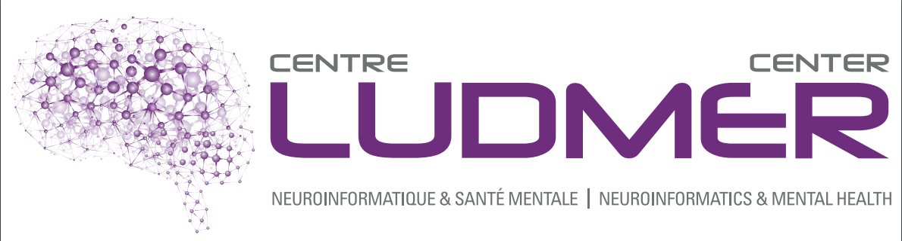
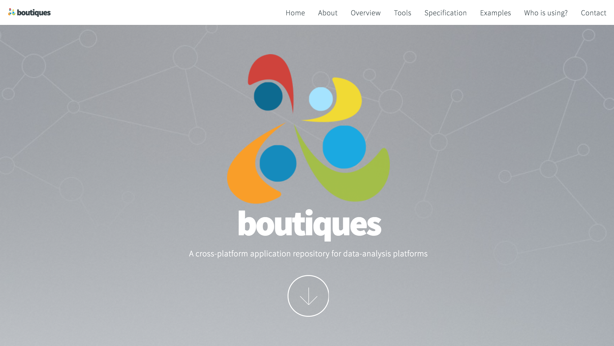

Data sharing
The Good, the Bad, and the Open

|

|
 |

Today's talk
- Data Sharing and Open Science
- Plans for Open Science at the MNI (TOSI)
- Why the MNI made this move
- Changes needed to make Open Science reality
- Examples of tools, datasets, and environments
- MNI Ecosystem - LORIS and CBRAIN
- Challenges and Hurdles of going Open
What is Data Sharing?
Exchange of information
Datasets
Tools
Standardization
Databases
Collaborations
Conferences, Hackathons
Facebook, Google, Twitter, etc.
Image source: http://blog.veritythink.com/post/87880448269/creative-data-sharing-and-open-humanitarianism


Best practices in Data Sharing
| Committee on Best Practices in Data Analysis and Sharing (COBIDAS) |

|

|

|


|

|
Open (Free) Science

|

|


Cyberinfrastructure

Centralized or Distributed?

Why did the MNI move towards Open Science?
Increased exposure
Greater collaborations
More citations
Less money spent of patents
New funding opportunities
Improved reproducibility
Enable scientific discovery
It's the future!
Aled Edwards video
What changes are necessary to make this a reality?
Improved Infrastructure
Databases, NoSQL, APIs, Version Control, Provenance Capture
NoSQL
LORIS API
Instrument Format


|

|
Standardization and Interoperability

|
|

Makes use of Containers |

|
API Building and Standardization
Atlas template building

|
Goal: To create standardized JSON metadata to describe atlases For either volumetric or surface atlases Pipelines can access more atlases for anatomical standardization |
Consolidated datasets
ADNI, ICBM, NIHPD, Allen Mouse Brain, IBIS, Generation-R, ABIDE, ABIDE Preprocessed, ADHD 200, ADHD Preprocessed, Human Connectome Project, OMEGA, UK Biobank, Edinburgh Biobank, BigBrain, Talairach, 1000 Functional Connectomes, Colin 27, MNI 305, 1000 Brains, AAL, ANIMAL, MAVAN, PreventAD, PING, MNI 152, MNI 305, FSL...
Not enough datasets!

|

|

ADNI

|
|

|

|
|


|

|
|

|
|

|

|
Quebec Parkinson Network


|
|
Tools and Environments
Neurovault, NeuroSynth, CIVET, VIP, Boutiques, Git-Annex, SOLID, BIDS, NiDM, DiCAT, DCMTK, NiPype, ITK, Freesurfer, SPM, FSL, Mobile MRI, 1000 Brains, AAL, BrainCode, GitHub, Amazon Cloud, FSL, IDA, BrainVisa, DICOM Confidential, DockerHub, Gate, CMIND...
Too many Tools!

Neurovault Example


BrainBrowser
..a set of web-based 3D visualization tools primarily used for viewing neurological data i.e. MRI scans.
It allows for real-time manipulation and analysis of 3D neuroimaging data through any modern web browser.

|

|
Data Publishing
Not Data Sharing
Data Publishing Geeksquad for Persistent DOIs


|
Important value of hackathons to data sharing initiatives 
|
What’s involved?
Longitudinal Acquisition, Storage and Curation, Interoperability, Reproducibility, Transfer, Anonymization, Security, Privacy, Ethics, APIs, Validation, Quality Control, Protocol Checking, Preprocessing, Analysis, HPC, Provenance, Ontological Standarization, Data Harmonization, Upgrades, Maintenance, Bug Fixes, User Interface, Javascript, Bootstrap, Tracking, Extensibility, Data Management, Summary Statistics, Workflows, Development, Tool Integration, Data Sharing, Download, Multi-Modal Linking, Querying, Image Processing, Visualization, Networking, System Administration, Partnerships, Funding, HR bureaucracies ...No big deal!
Data flow

WHAT IS LORIS?

“LORIS is a modular and extensible web-based data management system that integrates all aspects of a multi-center study: from heterogeneous data acquisition (imaging, clinical, behavior, genetics) to storage, processing and ultimately dissemination.” |

|
LORIS Dashboard
Imaging Data
Cross-modal querying
Real-time Query Results
Genomics Browser
|
Several default tools:
|

|
CBRAIN projects

TRY ME!
NOW
611 users; 199 international
191 sites
299 countries
NIAK

Challenges and Hurdles
| Future unknowns | Fear of getting scooped |
| Waste/duplication | Technical challenges |
| Decreased exposure | Privacy concerns |
| Changing the Publishing Culture | Data Harmonization |
| Licensing and legal aspects | Interoperability |
| More attrition | Reproducibility |
| Sustainibility | Obtaining ethics |
| Funding | Scalability |
Privacy Concerns


|
 Adrian Thorogood BIC lecture - March 9, 2016
Adrian Thorogood BIC lecture - March 9, 2016

|
Buy-in from other researchers
Open Science Beers
Beers at Else's - Wednesday's at 4:44pm


|
Thank you!Acknowledgements: Alex Zijdenbos, Dario Vins, Jonathan Harlap, Matt Charlet, Andrew Corderey, Sebastian Muehlboeck, Reza Adalat, Louis Collins, Vladimir Fonov, Marc Rousseau, Mia Petkova, Rathi Gnanasekaran, David Brownlee, Tarek Sherif, Pierre Rioux, Nic Kassis, Leigh MacIntyre, Claude Lepage, Ilana Leppert, Natasha Beck, Tristan Glatard, Bert Vincent, Lindsay Lewis, Najma Mahani, Elodie Portales-Casamar, Alden Woodward, Sylvain Milot, Jean Francois Malouin, Sylvain Baillet, Daniel Kroetz, Martin Weiss, Mathieu Desrosier, Jason Karamchandani, Amit Bar-Or, Ted Fon, John Brietner, Derek Lo, Patrick Bermudez, Chris Steele, Pamela Patterson and one of my favourites: Pierre Bellec! LORIS team on left |